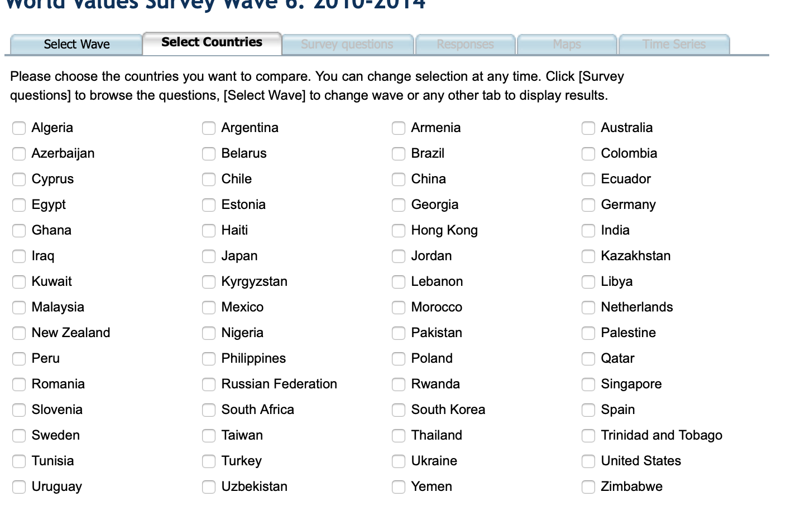
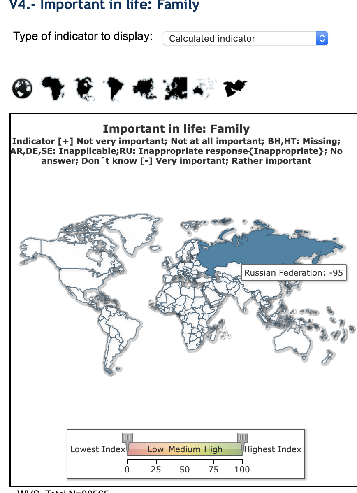

My goal is to find family values in 5 countries.
I open the page and have to selects a fixed span of 5 years, the map can not be interacted with. I select the
latest year span.

I see on the top bar that I will have to make some selections. I choose 5 countries of personal interest to me.
Now I’m supposed to select what I want to see. I choose my topic.
I am now presented with the data it is indeed what I have chosen to visualise but I have to spend a bit of time to
draw any conclusions from the data, there are a lot of numbers presented at once.
I got interested in the “cross by” drop down and selected Employment status there. This is even more confusing after
a
couple of minutes I realize they are showing 3d data in 2d slices.

I move on to the map. This doesn’t seem to be working as all countries are white and have negative values. I do it
all over again and now all the entries are green instead with values 90-100. I don’t know if this is correct either,
the map has basic interaction like hover for more information.